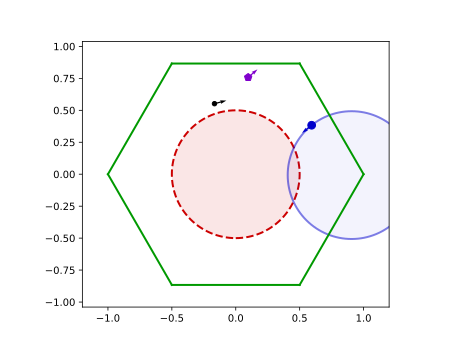

Visualizing
All plotting functionality of DynamicalBilliards lies within a few well-defined functions that use the PyPlot package to plot aspects of the system.
All plotting functions are brought into scope when using PyPlot. The functions are:
#
PyPlot.plot — Method.
plot(obst::Obstacle; kwargs...)
Plot given obstacle on the current PyPlot axes.
The default arguments for each type of obstacle have been chosen for maximum clarity and consistency.
The kwargs... given by the user are keywords passed directly into PyPlot's constructors. For Wall obstacles, kwargs are passed into PyPlot.plot(). For Circular obstacles, kwargs are passed into matplotlib.patches.Circle or Arc.
#
PyPlot.plot — Method.
plot(bd::Billiard; ax = (figure(); gca()))
Plot all obstacles in bd using the default arguments, set xlim and ylim to be 20% larger than cellsize and set the axis aspect ratio to equal.
plot(bd::Billiard, xmin, ymin, xmax, ymax; hexagonal = false, ax = (figure(); gca()))
Plot the given periodic billiard bd, repeatedly plotting from (xmin, ymin) to (xmax, ymax). Works for either rectangular periodic billiards, or hexagonal ones. Use keyword hexagonal to denote which one you want.
plot(bd::Billiard, xt::Vector, yt::Vector; hexagonal = false, ax = (figure(); gca()), plot_orbit = true, orbit_color = "C0")
Plot the given billiard bd and an acompanying orbit resulting from timeseries! using the limits defined by xt and yt. Works for both periodic and normal billiards.
#
PyPlot.plot — Method.
plot(p::AbstractParticle [, cyclotron=false]; use_cell=true, kwargs...)
Plot given particle on the current PyPlot axes. Optionally use p.current_cell for the particle's position. Given kwargs... are passed onto PyPlot.scatter.
The particle is represented as a small ball (PyPlot.scatter) and a small arrow (PyPlot.quiver). All kwargs... are given to scatter but if a keyword argument color is given, it is also passed to quiver.
Optionally you can plot the cyclotron traced by a MagneticParticle by giving true as second argument.
#
DynamicalBilliards.animate_evolution — Function.
animate_evolution(ps, bd, colnumber [, raysplitters]; kwargs...)
Animate the evolution of a vector of particles ps in billiard bd for a total time t (always considered float). Optionally enable ray-splitting.
Evolution kwargs
dt = 0.01: Time resolution used for production of time series (seetimeseries!. It is not recommended to significantly increase this value, to preserve the smoothness of the orbits.frameskip = 5: The amount ofdt-steps performed each frame. Increasing eitherframeskipanddtmakes the animation progress faster.tailtime = 1.0: The length of the "tail" trailing the particle in time units.resetting = reset_billiard!: function called after evolving each individual particle in the billiard (so that ray-splitting doesn't brake).
Colors & plotting kwargs
colors: An array of valid Matplotlib colors for the "tails". Ifcolorsis shorter thanps, colors are reused. Defaults to the standard Matplotlib color sequence.particle_kwargs::NamedTuple: Additional keyword arguments passed to theplotfunction for particles.tail_kwargs::NamedTuple: Additional keyword arguments passed to theplotfunction for "tails" (line plot).
Exporting and axis kwargs
figsize = (7.2, 7.2)): Size for new figure (if one is created). Must be divisible by 2 if you want to save the animation.ax = (figure(figsize = figsize); plot(bd); gca()): axis to plot on.savename = nothing: If given the animation is exported to mp4 file (requires ffmpeg). The name can include path.disable_axis = false: Remove the axis splines.deletefigs = true: To create the animation a lot of figures are saved in the save directory and are deleted after the animation is done. You can choose to keep them.dpi = 100: dpi of saved figures.framerate = 20: Animation framerate.
Examples
Plotting Obstacles with keywords
using DynamicalBilliards, PyPlot bd = billiard_sinai() figure() plot(bd[2]); plot(bd[4], color = "blue", linestyle = "dotted", lw = 5.0); plot(bd[1], facecolor = "yellow", edgecolor = "black");
Plotting a Billiard
using DynamicalBilliards b = billiard_polygon(6, 1) a = Antidot([0.0,0.0], 0.5) bd = Billiard(b.obstacles..., a)
Billiard{Float64} with 7 obstacles:
wall 1
wall 2
wall 3
wall 4
wall 5
wall 6
Antidot
If you want to quickly plot the entire billiard with default parameters, simply use the function plot(bd):
using PyPlot plot(bd)
plot() also sets up the axis to have equal aspect ratio and sets up the axis limits to be just large enough to contain the entire billiard.
Plotting particles
Following the above example, we create and plot a particle using the function plot:
p = randominside(bd) plot(p) # Plot one more particle with purple color, # pentagon shape and bigger size (default is s=30): p2 = randominside(bd) plot(p2; color=(0.5, 0, 0.8), marker="p", s=60.0) p3 = randominside(bd, 2.0) plot(p3, true; color=(0, 0, 0.8), marker="o", s=60.0)

(notice that the particle position and direction are random)
Color conventions
The default plotting settings have been chosen for maximum clarity and consistency. The color conventions followed are:
- Particles are black.
- Particle orbits use matplotlib's color cycle (first one is blue).
- Reflecting obstacles (e.g.
Disk,FiniteWalletc.) are green. - Randomly reflecting obstacles (e.g.
RandomDiskorRandomWall) are purple. - Ray-splitting obstacles are red with dashed linestyle.
- Periodicity enforcing obstacles are yellow with dotted linestyle (if and when plotted).
- Doors (
InfiniteWallwithisdoor=true) are plotted with alternating black and cyan dashed lines.
Animating the motion of a particle
The function animate_evolution is provided to animate the evolution of a particle from collision to collision. Let's animate a particle inside a simple pentagon with magnetic field:
bd = billiard_polygon(5, 1) a = Disk([0.0,0.0], 0.4) bd = Billiard(bd.obstacles..., a) p = MagneticParticle(0, -0.5, 0, 1.0) animate_evolution(p, bd, 10.0; savename = "penta")
The cool thing about animate_evolution is that it can animate multiple particles simultaneously! For example, here is a beautiful demonstration of chaos in non-dispersive billiards:
bd = billiard_stadium() N = 20 cs = [(i/N, 0, 1 - i/N, 0.5) for i in 1:N] ps = [Particle(1, 0.6 + 0.0005*i, 0) for i in 1:N] animate_evolution(ps, bd, 10.0; colors = cs, tailtime = 1.5, savename = "disperse")
Periodic Billiards
In order to plot periodic billiards, you have need to call a different method of plot, since now you also have to specify the limits of plotting. The methods provided are:
plot(bd, xmin, ymin, xmax, ymax) plot(bd, xt::Vector{T}, yt::Vector{T})
The last one conveniently plots the combo of particle-trajectory and periodic-billiard taking care of all the details internally. Give the keyword plot_orbit = false if you do not want to plot the orbit defined by (xt, yt).
For example, the following code
using DynamicalBilliards, PyPlot r = 0.25 bd = billiard_rectangle(2, 1; setting = "periodic") d = Disk([0.5, 0.5], r) d2 = Ellipse([1.5, 0.5], r, 2r/3) bd = Billiard(bd.obstacles..., d, d2) p = Particle(1.0, 0.5, 0.2) xt, yt, vxt, vyt, t = timeseries!(p, bd, 10) plot(bd, xt, yt) plot(p)
And, you can also periodically plot billiards with hexagonal periodicity. Only give the keyword argument hexagonal = true to plot. As an example:
bd = billiard_hexagonal_sinai(0.3, 1.50; setting = "periodic") d = Disk([0.7, 0], 0.2) d2 = Antidot([0.7/2, 0.65], 0.35) bd = Billiard(bd..., d, d2) p = MagneticParticle(-0.5, 0.5, π/5, 1.0) xt, yt = timeseries(p, bd, 10) plot(bd, xt, yt; hexagonal = true)
Boundary Map plots
#
DynamicalBilliards.plot_boundarymap — Function.
plot_boundarymap(bmap, intervals; kwargs...)
Plots the boundary map. The input arguments are the return values of boundarymap (also applies for the parallelized version, where bmap is a vector of vectors of 2-vectors).
Keyword Arguments
ax = (figure(); gca()): The axis to plot on.color = "C0": The color to use for the plotted points. Can be either a color forPyPlot.plotor a vector of colors of lengthlength(bmap), in order to give each initial condition a different color (for parallelized version).ms = 1.0: Marker size of the points.bordercolor = "C3": The color of the vertical lines that denote the obstacle borders.obstacleindices = true: show obstacle indices above plot- Any other keyword argument is passed to
PyPlot.plotwhich plots the points of the section.
Examples are shown in the phase spaces section.